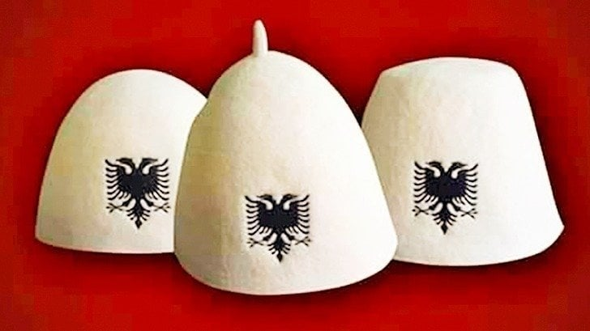

The qeleshe, plis, qylaf or kësul is a white brimless felt skull cap traditionally worn by Albanians. It has spread throughout Albanian-inhabited territories, and is today part of the traditional costume of the Albanians. The height and shape of the cap varies region to region.
